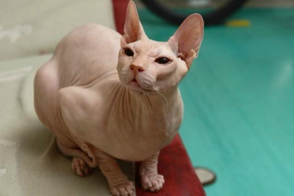
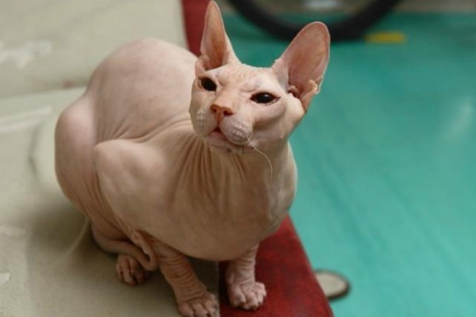

Коты - это млекопитающее семейства кошачьих на четырёх лапах,
с одним хвостом и множеством усовю.
Имеет шерсть и хвост, окрас которых может быть разным.
Извращённые селекционерские идеи людишек
породили и разновидности без шерсти и/или хвостов,
которые по странному недоразумению тоже считаются котами и кошками.
 

Но есть ли причины их не любить? Давайте поглядим
Также ты можешь заполнить Анкету Кошатника по этому линку
Из плюсов я бы выделил
- Мягкий (Не все)
- Милый (о5 не все)
- Все
Из минусов
- Бьет стаканы
- Шредингер
- Уходит когда ты его хочешь потискать
Также коты имеют уникальную способность - издавать приятные
звуки на частоте от 21,98 Гц до 23,24 Гц
Возможно это какой-то шифр.